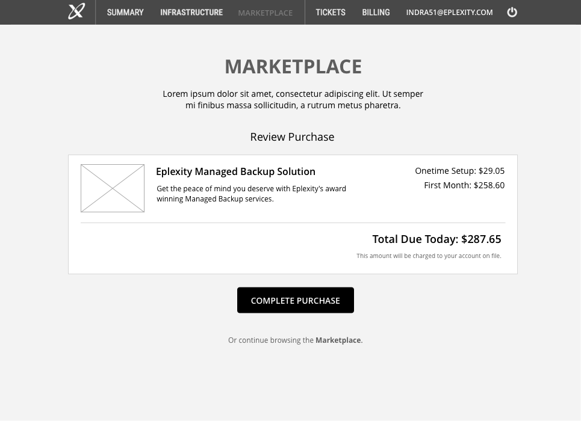

<!--tester
<div style="position: absolute; top:0; left: 50%;transform: translatex(-50%);bottom:0;opacity:.2;pointer-events:none;width:100%;text-align:center;z-index:10;"></div>
<!--/tester--><!---->
 
    <div class="group">
      <div class="action-handler" data-plate="servers"> 
        <a class="button" href="infrastructure-add-step0.html">Add a server</a>
      </div>
      <div class="action-handler" data-plate="network"> 
        <a class="button" href="dns-add-step0.html" data-sub-plate="dns">Add a DNS</a>
        <a class="button" href="#" data-sub-plate="gateway">Add a Gateway</a>
        <a class="button" href="#" data-sub-plate="loadBalancers">Add a Load Balancer</a>
        <a class="button" href="#" data-sub-plate="vpn">Add a VPN</a>
        <a class="button" href="#" data-sub-plate="firewallRules">Add a Firewall Rule</a>
      </div>
      <div class="action-handler" data-plate="storage"> 
        <a class="button" href="infrastructure-add-step0.html">Add a server</a>
      </div>
      <div class="action-handler" data-plate="tasks"> 
        <a class="button" href="infrastructure-add-step0.html">Add a server</a>
      </div>
    </div>

<section class="plate tabbed">
  <ul class="tabs">
    <li data-tab="servers" class="active">Servers</li>
    <li data-tab="network">Network</li>
    <li data-tab="storage">Storage</li>
    <li data-tab="tasks">Tasks</li>
  </ul>

  <div class="plate-tab" data-plate="servers">
    {% include subpage/infrastructure-tab-servers.html %}
  </div>

  <div class="plate-tab" data-plate="network">
    {% include subpage/infrastructure-tab-network.html %}
  </div>

  <div class="plate-tab" data-plate="storage">
    {% include subpage/infrastructure-tab-storage.html %}
  </div>

  <div class="plate-tab" data-plate="tasks">
    {% include subpage/infrastructure-tab-tasks.html %}
  </div>
</section>
